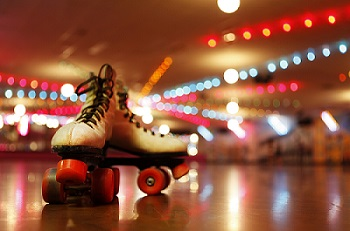
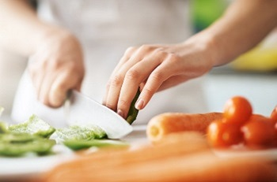
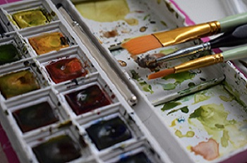

About Me
Hello! My name is Julie Saelee and I am a Quality Assurance Class 26 Student of Year Up! I am excited to be learning about web development and JavaScript, as this will be useful for my career in quality assurance. I'm hoping to apply these skills to a project management or software engineering role.
When I'm not in class, studying and doing homework, or working, I like to take my dog out on scenic walks through local trails and practice some photography. I'm a bit rusty as it has been years since I've picked up a digital camera but the fall season is especially inspiring to me when it comes to content creation. I recently purchased a lightly used Panasonc LUMIX DMC-ZS19 (it's a bit old fashioned, I know), but that is the aesthetic I'm aiming for with my photography style.
My Hobbies
Among photography, I have a variety of other hobbies as well. I'm no pro photographer, but when I see something picturesque, I will be whipping out either my phone or camera to capture the moment.
 I love rollerskating! You can go with friends or go solo. Regardless, once I get a good playlist going or if there's a good DJ in the booth, I am in the zone. It's amazing cardio, it's fun, and there's also a great rollerskating community.
 My mother taught me the basics of cooking at a young age and I often watched the Food Network Channel growing up because I didn't always have cable, but I always had Food Network; through that, I've always had a knack for cooking. It was something that was a chore then became a hobby because I love creating things.
 I haven't painted in a while, but I'm hoping once school is done, I can get into a new hobby (learning bass guitar) and get into a old hobby. Watercolor painting is a relaxing activity for me as it is a creative outlet to express myself freely.